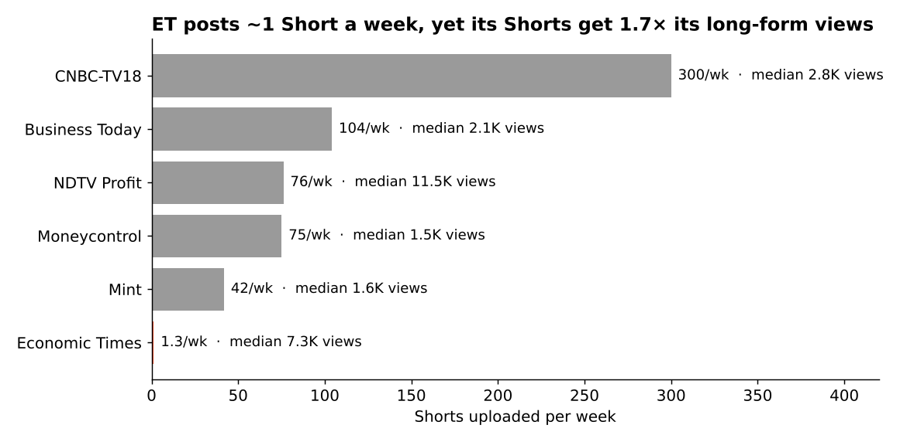
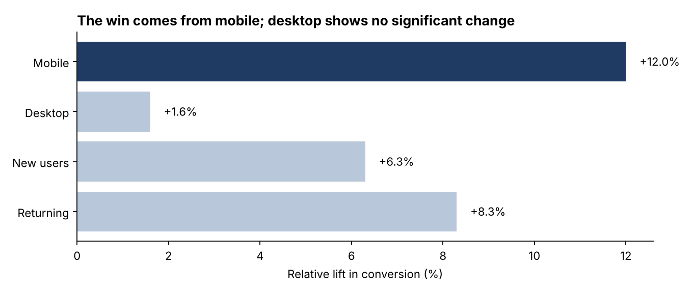
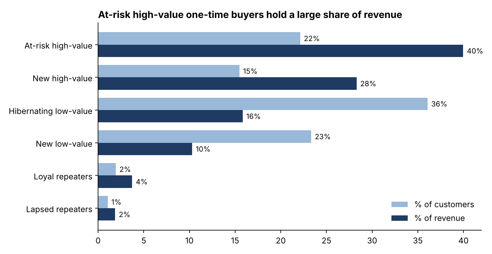
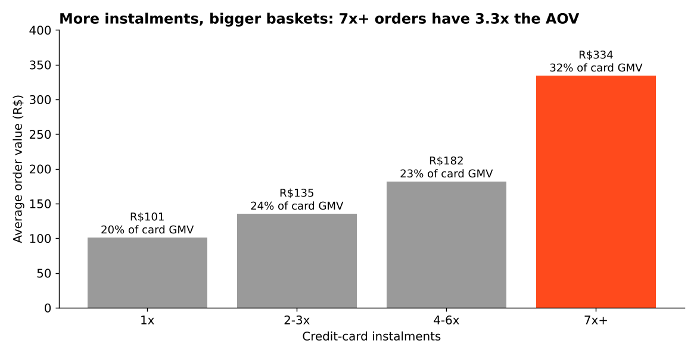

YashikaBhatia
Product & growth analyst with 2.5+ years across subscription media and 100+ e-commerce properties. I find where a product is leaking revenue, work out why, and turn it into a change the team can test. Currently at Times Internet (The Economic Times).
About
I'm a product analyst who works close to revenue. My job is to spot the business problem, find the friction in the funnel, and suggest what to change, then prove it with an A/B test.
At Times Internet I work on a health & wellness platform: city running events, online yoga subscriptions and dietitian-led diet plans. That covers website and funnel improvements, pricing and packaging, marketing-funnel efficiency on Meta and Google, payment-gateway issues, automated dashboards and an AI analyst built on GA4 and MCP.
Before that, at Convertcart, I designed and measured experiments for 60+ global e-commerce brands, from Business Analyst to Associate Team Lead.
- Role
- Data Analyst, Product & Growth
- Currently
- Times Internet (The Economic Times)
- Focus
- Funnels, growth, experimentation, pricing
- Core stack
- SQL · BigQuery · GA4 · Looker / Power BI
- Experience
- 2.5+ years
- Education
- BSc Physical Science, Gargi College (DU) · 9.13/10
- Based in
- Delhi NCR, India
Selected projects
Self-initiated analyses on public or clearly labelled simulated data. Open any project for the problem, data, approach, findings, impact and charts. All queries and outputs are on GitHub.
P/01Real data · SQLWhat wins on Indian business-news YouTube? ET vs 5 peers
+1.1Mviews / month opportunity+
What wins on Indian business-news YouTube? ET vs 5 peers
Problem
ET's YouTube team has limited editing capacity. Which formats, topics, video lengths and title styles actually win reach, and where is ET behind its competitors?
Data
1,860 recent uploads (long-form and Shorts) I collected from the public YouTube pages of The Economic Times, Moneycontrol, CNBC-TV18, Business Today, Mint and NDTV Profit on 18 Nov 2026: views, likes, comments, duration and publish time. Videos under 24 hours old were excluded.
Approach
- Converted publish times to IST and tagged every video by topic and title features with SQL CASE logic.
- Built a performance index (views ÷ the same channel's median for that format) so channels of different sizes compare fairly.
- Used breakout rate (share of videos at 2×+ the channel median) instead of averages, because a few viral videos (one at 1,000× median) distort any mean.
- Cut results by format, length, topic, title features and hour, then benchmarked ET against the peer average.
Key findings
- ET posts ~1 Short a week vs 41–300 a week at peers, yet its Shorts get a median 7.3K views, 1.7× its own long-form.
- Shorts bring 38–61% of views for NDTV Profit and CNBC-TV18, but only 18% for ET.
- ET has the highest engagement of the six channels: 1.6% on long-form vs 0.4–0.6% for peers.
- Geopolitics is 35% of all uploads but under-performs markets, personal finance and Indian politics.
- 10–30 minute videos break out 39% of the time vs 24% for clips under 3 minutes; 80+ character titles break out 14pp more often.
Impact
Restarting Shorts at 5 a day, at today's median performance, is worth ~1.1M extra views a month (about +54%) on ET's current long-form base.
Recommendations
- Cut 3–5 vertical clips a day from existing interviews.
- Shift some geopolitics output to markets and personal finance, where ET already beats peers ~1.9×.
- Default to 10–30 minute explainers with descriptive, quote-led titles.


Note: One snapshot of about two weeks of uploads; topics are tagged by title keywords.
P/02Experimentation · ExcelA/B test design & readout, with a ship / no-ship call
+7.3%conversion lift+
A/B test design & readout, with a ship / no-ship call
Problem
Does showing a delivery date and a "free returns" badge at checkout raise conversion without hurting refunds or basket size, and should we ship it?
Data
A simulated 21-day checkout experiment with 231K sessions, clearly labelled as simulated, aggregated to 168 daily rows (day × arm × device × user type).
Approach
- Sized the test: 77,062 sessions per arm to detect an 8% relative lift on a 3.2% baseline, run for 3 full weeks.
- Checked the traffic split with a chi-square sample-ratio-mismatch test.
- Tested conversion and revenue per session with z-tests and 95% confidence intervals; tested refund rate and AOV as guardrails.
- Cut by device and new vs returning users with Bonferroni-corrected significance, and checked for a novelty effect.
- Everything is 289 live Excel formulas, so changing an input recalculates the whole readout, including the written memo.
Key findings
- Conversion rose from 3.22% to 3.45%: +7.3% (95% CI +2.7% to +11.8%, p = 0.002).
- Revenue per session +5.5%; the traffic split was healthy (SRM p = 0.28).
- Refund rate rose from 4.26% to 6.15%: a guardrail breach (p = 0.0002).
- The win is almost all mobile (+12.0%, significant); desktop +1.6% is not significant.
- No novelty effect: lift held or grew after day 3.
Impact
About ₹7.2M net a year after reversed orders and refund handling, vs ₹12.0M gross. Decision: ship to mobile only, behind a flag, after re-testing without the free-returns badge.
Recommendations
- Pull refund reasons for treatment orders.
- Re-test with the delivery date only.
- Monitor refund rate weekly after the mobile rollout.


Note: Simulated data, used to show the design and decision method.
P/03Root cause · SQLLate deliveries & bad reviews: an e-commerce RCA
−20%late orders+
Late deliveries & bad reviews: an e-commerce RCA
Problem
Review scores fell sharply in some months. What drives 1–2★ reviews, where in the order lifecycle does it start, who owns the fix, and what is it worth?
Data
Public Olist Brazilian marketplace data: 96K delivered orders (2016–2018) across orders, customers, items, sellers and reviews.
Approach
- Built one clean delivered-orders view with de-duplicated reviews and delivery vs promised date.
- Split each order into approval → seller preparation → carrier transit.
- Cut by state, seller decile, category and month; built a seller SLA scorecard.
- Sized the fix in orders, reviews and GMV. 12 SQL queries.
Key findings
- Late orders get 54% bad reviews vs 9% on time.
- There is a cliff at 4 days late: 61–78% of reviews turn bad.
- A late seller hand-over makes late delivery 3.8× likelier (24.4% vs 6.5%).
- The worst 30% of sellers cause 54% of late orders.
- CE, BA and RJ run 13–15% late vs 6% in SP; Black Friday and Feb–Mar 2018 were the worst months.
Impact
Fixing late seller hand-overs removes ~1,560 late orders (20%) and ~700 bad reviews, protecting part of R$1.35M of late-order GMV.
Recommendations
- Seller SLA alerts and a weekly scorecard; coach, then penalise the bottom decile.
- Regional ETA buffers for peak months.
- Proactive delay messages before an order crosses 4 days late.


P/04Retention · SQLCohorts, RFM segments & a sized win-back plan
R$309Kwin-back value+
Cohorts, RFM segments & a sized win-back plan
Problem
Do acquired customers come back? Whom should CRM target first, and what is a win-back campaign worth?
Data
Public Olist data: 93K unique customers and R$15.4M revenue.
Approach
- Built a customer-orders view with each customer's order sequence and cohort month.
- Measured repeat rate and time to second order; built a monthly cohort retention matrix.
- Scored every customer on Recency and Monetary quintiles (NTILE) plus a repeat flag, mapped to 6 named segments.
- Ranked first-purchase categories by repeat rate and sized a win-back campaign at 3%, 5% and 10%.
Key findings
- Only 3.0% of customers buy again; repeat buyers bring 5.6% of revenue.
- 54% of second orders happen within 90 days.
- At-risk high-value customers: 22% of the base, 40% of revenue, averaging R$298.
- Home, decor and bed/bath first purchases repeat 3× more than electronics.
Impact
Reactivating 5% of at-risk high-value customers once ≈ R$309K (+2.0% revenue); 10% ≈ R$618K.
Recommendations
- Day 60–90 win-back flow with a hold-out group.
- A second-order nudge inside 30 days for new high-value buyers.
- Use home and decor as acquisition categories.


P/05Revenue · SQLRevenue, category & payment deep-dive
3.3×AOV on 7+ instalments+
Revenue, category & payment deep-dive
Problem
Is revenue growth coming from more buyers or bigger baskets? Which categories and payment options matter, and does freight cost hurt reviews?
Data
Public Olist data: 96K delivered orders, Jan 2017 to Aug 2018.
Approach
- Monthly GMV, orders and AOV with MoM % and a 3-month rolling average.
- Jan–Aug year-over-year comparison.
- Category Pareto and H1 growth by category.
- Payment mix and instalment bands vs basket size; freight share vs review score. 8 SQL queries.
Key findings
- GMV grew 2.4× YoY (R$3.47M → R$8.45M), almost entirely from more buyers; AOV stayed flat at ~R$160.
- GMV plateaued at R$1.0–1.1M a month from Jan 2018.
- Top 7 categories make ~50% of revenue.
- Orders on 7+ instalments are 16% of card orders but 32% of card GMV, with AOV R$334 vs R$101.
- Hypothesis rejected: freight share barely moves reviews.
Impact
Identified instalments as the strongest untapped AOV lever and showed delivery speed matters more than freight discounts.
Recommendations
- Promote no-interest 6x/10x instalments on items above R$150, and A/B test it.
- Shift acquisition budget to the fastest-growing categories.
- Track a weekly GMV bridge: buyers × orders per buyer × AOV.


Work case studies
Real problems from my roles. Each one: the problem, what the data showed, the hypothesis, what I did and the impact.
Times Internet
Health & wellness platform · product anonymisedC/01City running eventsSelling more tickets for city running events
+10%landing → registration+
Selling more tickets for city running events
Problem
- Ticket sales for running events in 4 metro cities needed to grow, and conversion from landing to registration was low.
- Paid ads were spending heavily without a clear view of which were working.
What I did
- Mapped the full funnel and found the friction: a long registration form, extra details asked too early and a clunky UI flow.
- Proposed a shorter, simpler flow and ran it as an A/B test.
- Noticed most runners sign up in groups, so I designed a referral plan with a ticket-upgrade reward.
- Analysed Meta and Google ads: paused high-spend, low-return ads and turned patterns from the winners into creative changes.
- Investigated payment-gateway failures in the checkout funnel.
- Built a business dashboard with daily updates and city-specific strategies and tests.
Impact
- +10% landing-to-registration conversion from the simplified flow, lifting total revenue.
- The referral plan drove more group registrations and revenue.
- Opened new revenue streams beyond tickets: stalls, corporate tickets and sponsorships.
- Less ad spend wasted on poor performers.
C/02City running eventsIntroducing a VIP race tier — +₹20K GTV per day
+₹20KDaily GTV added+
Introducing a VIP race tier — +₹20K GTV per day
The event sold only one cheap classic ticket. I proposed a premium VIP category for runners who want a better race-day experience, lifting average ticket size instead of chasing more registrations.
Problem
Registration offered a single classic ticket at a low price point. Every race category looked identical, runners willing to pay for a premium experience had nothing to buy, and revenue was capped by volume alone — the only way to grow was to sell more of the cheapest thing.
What the data showed
- GA4 funnel: 100% landing → 46% category select → 22% payment init → 14% paid
- SQL on transaction logs showed ~9% of registrants buying add-ons after purchase — clear latent willingness to pay for extras
- Average ticket size was flat across every category; no price ladder existed to trade up into
- Event tracking was firing inconsistently on the payment step, understating true drop-off
Hypothesis
If we introduce a VIP tier alongside the classic ticket — bundling the extras premium runners already buy separately (reserved parking, express bib, lounge, separate start wave, physio, pro photos) at a higher price — then average ticket size and total GTV will rise, because a share of runners self-selects up instead of buying the cheapest option.
What I did
- Fixed the tracking layer first — reinstrumented plan-view, payment-init and payment-success events so the test could be read at all
- Designed a two-card ladder per distance: Classic vs Premium Pass, with the benefit stack split into convenience, experience, event access and memories
- Anchored the premium price with an early-bird discount, 'limited slots only' scarcity and GST-inclusive clarity
- Collapsed category selection and payment into one continuous flow with visible payment methods
- Built a live Looker dashboard on BigQuery to track GTV, tier mix and payment-failure rate daily
Impact
VIP mix stabilised at a double-digit share of registrations — incremental revenue came from existing traffic, not from more acquisition spend, and the automated dashboard replaced a manual daily revenue pull.
GA4 · BigQuery · SQL · Looker Studio · A/B testing · Pricing & packaging
C/03Online yoga subscriptionsGrowing online yoga subscriptions
+5%funnel conversion+
Growing online yoga subscriptions
Problem
- Online yoga classes sold as 1-month, 3-month and 1-year plans. The goal was more subscriptions and more revenue.
- Users only saw plans and prices after submitting a lead form, so many dropped off before seeing the value.
What I did
- Analysed the funnel step by step and proposed showing plans directly on the page, before the lead form.
- Proposed selling yoga plans to an international audience at a higher price point.
Impact
- +5% conversion after moving plans ahead of the lead form.
- International pricing added a higher-AOV revenue stream.
C/04Online yoga subscriptionsPrice-per-day anchoring on the yoga plan page
+18%Plan selection+
Price-per-day anchoring on the yoga plan page
Reframed subscription pricing as cost per day and anchored one recommended annual plan.
Problem
Four plans were presented as equal-weight cards with only the billed amount shown. Users landing from campaigns viewed plans but rarely selected one — plan view to plan selection was the weakest step in the whole subscription funnel.
What the data showed
- Campaign → landing → plan-view was healthy; plan-view → plan-select was the sharpest fall in the funnel
- Session recordings showed repeated scroll-up/scroll-down across the four cards before exit
- Cohort analysis: annual subscribers retained materially better, but almost nobody was choosing annual
Hypothesis
If we reframe pricing as cost per day and elevate a single recommended annual plan with a savings badge and trust strip, then plan selection will increase — because the decision shifts from four similar prices to one obvious value comparison.
What I did
- Introduced ₹/day framing with a savings percentage against the monthly plan
- Promoted one hero plan; demoted the rest into a compact secondary row
- Added a sticky CTA and a trust strip (certified coaches, cancel anytime)
- Measured with a clean A/B split and a dedicated GA4 funnel per variant
Impact
Shifting mix towards annual plans also improved retained revenue per acquired user, not just the front-end conversion number.
GA4 · A/B testing · Cohort analysis · SQL · Looker Studio
C/05Diet subscriptionsBuilding trust and new markets for diet plans
50%+net GTV growth+
Building trust and new markets for diet plans
Problem
- Dietitian-led diet plans (consultation call plus 1/3/6/12-month plans). The brand was new and unknown, so trust and leads were the bottleneck.
What I did
- Proposed free webinars to generate leads, build trust and then sell plans.
- Proposed launching online diet plans in international markets such as the UAE and Singapore at higher rates.
Impact
- Webinars generated ₹5 lakh in revenue.
- International plans grew the business by more than 50% in net GTV.
C/06Diet subscriptionsTurning payment failures into a recovery loop
≈₹15K/dayGTV recovered+
Turning payment failures into a recovery loop
Turned failed payments into a held-order recovery loop with retry, alternate methods and targeted follow-up.
Problem
Revenue was fluctuating week to week with no clear cause. Users who reached payment and failed were dumped back to the plan list — the intent was lost and nothing chased it.
What the data showed
- RCA across payment-gateway responses isolated failure reasons by method, bank and device
- A meaningful share of 'lost' revenue was users who tried to pay and simply could not complete
- RFM-style segmentation surfaced a high-propensity cohort worth targeted follow-up
Hypothesis
If we treat a failed payment as a held order rather than a dead end — retry in place, alternate methods surfaced, and a nudge to high-propensity users — then recoverable revenue currently leaking out of the funnel will convert.
What I did
- Built a failure taxonomy in BigQuery and pushed it into a daily Looker view
- Redesigned the failure state: plan held, one-tap retry, UPI/card/wallet surfaced inline
- Fed high-propensity failed payers into targeted marketing and telecalling lists
- Automated the recovery report with SQL + Apps Script so it ran without an analyst
Impact
Scaled within two months, driven by segment-targeted recovery rather than additional paid acquisition.
SQL · BigQuery · GA4 · Apps Script · Looker Studio
C/07Online yoga subscriptionsGA4 × MCP × AI: a business command centre with a built-in analyst
+30%Decision speed+
GA4 × MCP × AI: a business command centre with a built-in analyst
Built one command centre for the Yoga business — revenue, spend, ROAS, funnel, classes, retention and forecast in a single view — and wired GA4 to an LLM through an MCP server so anyone can ask a question in plain language and get an automated report in their inbox.
Problem
Every question about the Yoga business — why did revenue dip, which cohort churned, is Meta or Google carrying the spend, how many of the paid base actually attended — meant an analyst exporting GA4, cleaning it, re-querying BigQuery and writing commentary. Numbers lived in five places, insight latency was measured in days, and the team was reporting instead of deciding.
What the data showed
- Audit of recurring requests found the same ~12 question patterns repeating every week
- 6–8 analyst hours a week went into assembling reports rather than analysing them
- Revenue, media spend, class attendance and churn each sat in a different tool with no shared definition
Hypothesis
If the Yoga business is modelled once into a certified layer and GA4 is exposed to an LLM through an MCP server — split across specialised agents for extract, analyse and narrate — then a plain-language prompt can return a decision-ready insight, removing the analyst from the retrieval loop entirely.
What I did
- Built the Yoga command centre: revenue, media spend, blended ROAS, conversions, MTD and month projection, paid base, likely-to-churn — all on one screen with 7D/30D/90D/MTD switching
- Added dedicated views for full funnel, Meta ads, Google ads, campaigns & telecalling, classes & streaks, retention & churn, run rate & forecast
- Integrated GA4 with an MCP server so analytics data is queryable as a tool call rather than an export
- Chained specialised agents — extractor → analyst (funnel, cohort, segment deltas) → writer — grounded in certified metric logic so numbers match the dashboards
- Shipped an 'Ask the analyst' assistant: ask a question in plain language and get the answer plus a formatted report delivered automatically over email
Impact
PMs and marketers stopped queueing behind analytics for routine questions; the daily revenue and ROAS pull became automatic, and analyst time moved to experiment design and RCA.
GA4 · MCP · Claude / LLMs · BigQuery · SQL · Looker Studio · Automated email reporting
C/08Health & wellness platformTargeting the right users with a propensity model
₹40L+revenue impact (all RCAs)+
Targeting the right users with a propensity model
Problem
- Marketing and CRM effort was spread evenly across users, and revenue was leaking at payment.
What I did
- Built a propensity model to score users on how likely they were to buy, so campaigns could focus on the highest-intent users.
- Ran root-cause analyses on payment failures and funnel drop-offs across products, channels and segments.
Impact
- Root-cause fixes across the funnel and payments delivered ₹40L+ revenue impact.
C/09Metrics design · Health & wellness platform · yoga and diet subscriptionsSubscription North-Star & activation framework
+
Subscription North-Star & activation framework
Problem
The team reported revenue and installs, but nothing told us whether a new subscriber had actually succeeded in the product.
Approach
- Defined the North Star as weekly active subscribed sessions per paying user
- Mapped an activation event (first completed session within 7 days) from behavioural data
- Instrumented the input metrics: plan view → payment init → activation → week-4 retention
- Built the cohort view so every release could be read against activation, not just revenue
Outcome
Product reviews shifted from 'how much did we sell' to 'how many of them stuck' — activation became the sprint goal.
C/10Data product · Health & wellness platform · subscriber baseRetention & churn early-warning score
+
Retention & churn early-warning score
Problem
Churn was only visible after a renewal failed. Nobody could name which subscribers were about to leave while there was still time to act.
Approach
- Modelled engagement, plan-usage depth, session recency and support signals into a single health score per subscriber
- Split the base into healthy / at-risk / dormant cohorts and validated the split against actual renewals
- Handed the at-risk cohort to lifecycle comms and in-app nudges as a weekly automated feed
- Tracked win-back and renewal rate per cohort so the score kept getting recalibrated
Outcome
Retention work moved from reactive to pre-emptive — the at-risk list became a standing item in the weekly product review.
C/11Data foundation · Times Internet · GA4, BigQuery, payments, CRMSingle source of truth for funnel reporting
4Sources unified+
Single source of truth for funnel reporting
Problem
Campaign, product and finance each had their own number for the same funnel. Meetings started with reconciling data instead of deciding anything.
Approach
- Mapped every source — GA4 events, BigQuery exports, payment-gateway logs, CRM — and where each one disagreed
- Fixed the tracking plan first: event naming, plan and payment parameters, de-duplication rules
- Built certified funnel and revenue models so campaign → plan view → payment init → success ties out end to end
- Scheduled the refresh and published one Looker layer everyone reads from
Outcome
One agreed funnel number across teams, and dashboards that update themselves instead of being rebuilt each Monday.
Convertcart
E-commerce CRO · 60+ accountsE/01Sauder WoodworkingCheckout page revamp: decluttering a two-column layout into a guided flow
+
Checkout page revamp: decluttering a two-column layout into a guided flow
The old checkout gave half the screen to a static item list and squeezed the entire form into a narrow column. We restructured it into a step-guided, scannable flow with the order summary always in view.
Problem
The two-column layout was inefficient: the left 'My Items' column was static yet consumed nearly half the screen for information that did not need constant prominent visibility. The entire interactive checkout — shipping to payment — was forced into one narrow right column, causing excessive vertical scrolling and a cramped, disjointed experience right at the point of payment.
What the data showed
- Cart → checkout-begin showed healthy intent, but checkout-begin → order-completion dropped sharply — the friction was inside the form, not upstream
- Session recordings showed repeated scrolling between the narrow form column and back to the item list to re-verify order details
- The static item column occupied ~50% of viewport width while carrying zero interactive elements
- Long-form checkouts with hidden or cramped order summaries correlated with the highest abandonment in this category
Hypothesis
If we declutter the checkout — demote the static item list into a compact always-visible order summary, add a visible step indicator (Shipping & Billing → Payment → Review), and give the interactive form the full usable width — then checkout completion will rise, because buyers stop scrolling to re-verify details and always know where they are in the flow.
What I did
- Replaced the split static/interactive columns with a guided three-step progress indicator (Shipping & Billing Info → Payment Info → Review & Place Order)
- Condensed 'My Items' into a compact summary card pinned beside the form, keeping products and total visible without dominating the layout
- Gave the shipping form proper field width with clear grouping, labels and inline address reuse ('Same as billing')
- Kept order total, free-shipping confirmation and discount-code entry persistent in the summary at every step
- Ran as a custom A/B campaign (11 Jul – 1 Aug 2025) with checkout-step events instrumented in GA4
Impact
The revamp turned a cluttered, scroll-heavy single-page form into a defined, guided checkout — buyers can always see what they are paying for and how many steps remain, removing the re-verification loops that drove abandonment.
GA4 · Session recordings · A/B testing · Funnel analysis · Figma
E/02Garden Goods DirectGrowing-zone personalisation: turning a hidden tool into the buying decision
+
Growing-zone personalisation: turning a hidden tool into the buying decision
Plants are demographic-specific — what thrives in a desert dies in the mountains. The site showed everyone everything. We moved the growing-zone tool into the header and pushed a zone verdict onto every product page.
Problem
Shoppers could not tell whether a plant would survive in their yard. The site listed the full catalogue to everyone, and the growing-zone tool that answered the question was buried on a Resources page — so buyers had to research hardiness zones themselves before committing. Product-to-cart movement sat at ~5%.
What the data showed
- Users who found the growing-zone tool converted at 6.75% vs 0.74% on product pages — 9× more likely to buy
- Only ~1% of visitors (1,141 of 138,593) ever reached the tool; 112,000+ sat on product pages without it
- Mobile was the strongest zone-tool cohort at 7.45% CR — and the largest audience
- ~95% of product-page visitors left without adding to cart; 87% of carts were still abandoned, pointing at unresolved compatibility doubt late in the funnel
Hypothesis
If we surface the growing-zone tool as a persistent header CTA, map the shopper's zipcode to a USDA hardiness zone via API, and then state plainly on every product page whether that plant will grow in their zone, then product-to-cart and overall CR will rise — because the 9× conversion effect of the tool stops depending on the 1% who stumble onto it.
What I did
- Promoted a 'Find your growing zone' CTA into the site header on desktop, mobile and tablet
- Built a zipcode → growing-zone API mapping with a short 'why we ask for location' explainer to lift completion
- Persisted the zone across the session and rendered a per-product verdict ('Perfect for your area — thrives in Zone 7A') inside the buy box
- Filtered and re-ranked category listings toward zone-appropriate plants instead of the flat catalogue
- Instrumented zone-set, zone-match and zone-mismatch events so the effect could be read by device and zone
Impact
The experiment moved a proven 9× conversion signal from a hidden page into the moment of decision, and gave mobile — the highest-converting zone cohort — the reassurance it was missing before add-to-cart.
GA4 · SQL · A/B testing · Zipcode → zone API · Session recordings
E/03AR15 DiscountsBrand discovery in the nav bar — a validated CR win
5.30% → 5.56%Mobile CR+
Brand discovery in the nav bar — a validated CR win
Surfaced a Shop-by-Brand grid in the navigation so brand-intent buyers reach relevant products in one click.
Problem
Brand-loyal buyers had no way to shop by brand. They entered on category pages, looped without finding their brand, and left — category-to-product movement was decaying month over month.
What the data showed
- Category-viewed to product-viewed ratio trending down across the year
- On-site search was dominated by brand names that had no landing destination
- Behavioural analysis showed repeat pogo-sticking between category and product pages
Hypothesis
If we expose a Shop-by-Brand grid directly in the navigation, then conversion will improve, because brand-intent users reach a relevant product set in one click instead of browsing category pages that do not match their intent.
What I did
- Built a brand grid in the nav, cloned into separate desktop and mobile/tablet experiments
- Ran both to statistical significance before rolling out
- Fed the winner into a broader discovery roadmap (Finish Your Build, Configure Your AR)
Impact
Desktop clone also won (+3.2% campaign gain). Across the account: 15 experiments, 53% success rate, 6.6% cumulative site gain.
GA4 · A/B testing · Heatmaps · SQL · Figma
E/04Tufina WatchesRCA on a 37% revenue drop — it was never marketing
in 4 layersRoot cause found+
RCA on a 37% revenue drop — it was never marketing
Traced a 37% revenue collapse through channel, funnel and device layers to a broken mobile add-to-cart.
Problem
Revenue collapsed roughly 37% in 20 days. The first assumption in the room was a campaign or traffic-quality problem, and the client was about to pour spend into fixing acquisition.
What the data showed
- Pre vs post: revenue −37%, CR −22%, transactions −29%, users only −9%
- ~70% of the loss spread across organic, direct, SMS and cross-network — not one channel
- Funnel: add-to-cart rate −25% while checkout completion stayed flat
- Device split: mobile carried ~76% of the loss; Safari and in-app browsers near zero transactions
Hypothesis
If the decline is channel-independent, concentrated at add-to-cart, and isolated to specific mobile browsers, then the root cause is a technical failure of the add-to-cart function — not traffic quality or campaign performance.
What I did
- Structured the RCA in four layers: overall trend → channel → funnel and page → device and browser
- Ruled out acquisition by separating user loss from conversion loss
- Handed engineering a scoped QA target: add-to-cart on mobile Safari and in-app browsers
- Recommended rebalancing traffic back to category pages while the fix shipped
Impact
The value here was direction: the team stopped optimising campaigns and fixed a broken button.
GA4 · SQL · Funnel analysis · Microsoft Clarity · FullStory
E/05Camera WarehouseKilling grey-import anxiety on high-ticket product pages
+
Killing grey-import anxiety on high-ticket product pages
Moved warranty, local-stock and savings proof above the fold on high-ticket product pages.
Problem
On $1,500+ camera bodies, shoppers hesitated over whether stock was Australian and warranty-backed. Warranty sat in a collapsed tab far below the fold, and there was no way to compare similar bodies without leaving the page.
What the data showed
- High product-page engagement with low add-to-cart on the top-priced SKUs
- Heatmaps showed heavy scroll and tab-hunting around specification content
- Support themes clustered around warranty and grey-import questions
Hypothesis
If warranty, local stock and savings are surfaced above the fold and a compare option is added, then add-to-cart on high-ticket SKUs will rise, because the two blocking questions are answered before the price is evaluated.
What I did
- Warranty prominence and Australian-stock trust badges moved above the fold
- Discount percentage and amount saved shown alongside price (mobile and tablet test)
- Compare option and compatible-accessories module added to the PDP
- Shop-by-Brand exposed as a separate discovery test
Impact
One of several accounts where the pattern held: on considered purchases, trust content converts harder than persuasion content.
GA4 · A/B testing · Heatmaps · Shopify / Magento · Figma
E/06Heartland AmericaDiscovery + price reassurance across a 1,400-SKU catalogue
+6.99%Cumulative site gain+
Discovery + price reassurance across a 1,400-SKU catalogue
Surfaced subcategory navigation and carried a Best Price Promise from category through to cart.
Problem
A large, flat catalogue meant users could not narrow down, and a value-focused audience had no price reassurance before committing. Category-to-product movement and cart completion were both weak.
What the data showed
- Segment sizing in the impact model: 62.8K users at 4.78% base CR on product page; 35.2K at 3.07% on category
- Cart segment converting at 55% — small lift there sizes to meaningful revenue
- Symptom tracking flagged low subcategory movement as the top structural issue
Hypothesis
If subcategory navigation is surfaced on category pages and a Best Price Promise plus value props are carried through product and cart, then both discovery and completion improve — sized at ~2,000 additional orders per year in the projection model.
What I did
- Built a projected-impact model per experiment: segment size, base CR, projected CR, additional orders
- Prioritised the roadmap by modelled revenue rather than by opinion
- Shipped subcategory highlight, Best Price Promise, cart value props, testimonials, horizontal accordion
Impact
Projection model sized ~1,999 additional orders and ~$187K incremental revenue across the live roadmap.
GA4 · SQL · Looker Studio · A/B testing · Impact modelling
E/07Operating system · ConvertCart · CRO programmeExperiment prioritisation model for 60+ accounts
95%Idea acceptance+
Experiment prioritisation model for 60+ accounts
Problem
Test ideas were argued on taste. With 60+ accounts there was no consistent way to decide what shipped first.
Approach
- Built a projected-impact model: segment size × base CR × projected lift = additional orders
- Layered RICE on top and standardised the hypothesis template (change · segment · metric · because)
- Set a governance bar: no test without instrumentation QA and a guardrail metric
- Mentored 15+ analysts and CSMs on the model and on GA4 / Looker reads
Outcome
95% idea-acceptance rate with clients, 50–85% test success rate, and roadmaps defended in revenue terms.
Experiment library: 28 tests across 20+ accounts ↓
| Client | Test | Problem | What we did | Impact |
|---|---|---|---|---|
| AR15 Discounts | Brands Highlight in Nav BarDiscovery | Brand-intent buyers had no brand entry point; on-site search was full of brand queries with no landing page. | Added a Shop-by-Brand grid inside the global nav, cloned as separate desktop and mobile experiments. | Mobile CR 5.30% → 5.56%, +4.91% campaign gain, +302 transactions. Desktop clone +3.2%. |
| AR15 Discounts | Finish Your BuildCross-sell | Rifle buyers left without the parts needed to complete a build — attach rate on accessories was flat. | Post-add-to-cart module recommending compatible parts grouped by build stage. | Higher accessory attach rate and AOV on build-intent sessions. |
| AR15 Discounts | Configure Your ARGuided selling | First-time buyers could not translate use case into a product spec and bounced from category pages. | Step-based configurator (use case → calibre → budget) landing on a filtered product set. | Reduced category pogo-sticking; qualified traffic into product pages. |
| Camera Warehouse | Warranty ProminenceTrust | On $1,500+ bodies, grey-import and warranty doubt blocked add-to-cart; warranty sat in a collapsed tab. | Moved Australian-stock and warranty proof above the fold on the PDP. | Winner — add-to-cart lift concentrated on high-AOV SKUs. |
| Camera Warehouse | Discount % & Amount SavedValue framing | Only the final price was shown, so the deal value was invisible on mobile. | Displayed discount percentage and absolute saving next to price (mobile/tablet test). | Winner — improved product-page to cart rate. |
| Camera Warehouse | Compare OptionDecision support | Shoppers ping-ponged between similar bodies in multiple tabs before deciding. | Inline compare of specs across shortlisted cameras. | Winner — fewer sessions ending in undecided exits. |
| Natural Pigments | Main Category Page RevampNavigation | A deep, specialist catalogue was flattened into an unreadable category page. | Rebuilt the category page around pigment families with visual entry points. | Higher category → product movement. |
| Natural Pigments | Colour Shade ProminenceProduct clarity | Actual pigment colour — the buying decision — was only visible after opening the product. | Surfaced true-colour swatches on listing tiles. | More qualified product views, fewer returns-driven support queries. |
| Earthley | Shop by NeedGuided selling | Wellness buyers shop by symptom, but navigation was organised by product type. | Need-based navigation (sleep, immunity, skin) mapped onto existing collections. | Winner — improved discovery and per-session product views. |
| Earthley | Hamburger → Navigation BarNavigation | Desktop hid the whole catalogue behind a hamburger, suppressing category entry. | Exposed a persistent horizontal nav with top collections. | Winner — category page entries up. |
| Sauder | Checkout Page RevampCheckout | A long single-column checkout with hidden shipping cost drove late-stage abandonment. | Restructured into clear steps with cost transparency and an order summary pinned. | Reduced checkout abandonment. |
| Sauder | Parts & Assembly InformationAnxiety reduction | Assembly difficulty was the top pre-purchase objection in support themes. | Added assembly time, tools required and part list to the PDP. | Winner — lifted add-to-cart on flat-pack furniture. |
| Z Gallerie | Highlight Free Design ServiceService value | A high-value differentiator was buried in the footer. | Promoted free design consultation across PDP and cart. | More consultation leads from high-AOV browsers. |
| Swiss Diamond | Sticky Accordion & Add to CartFriction | Long spec pages pushed the CTA far below the fold on mobile. | Sticky add-to-cart plus collapsible spec accordions. | Winner — add-to-cart rate up on mobile. |
| Vintage Watch Specialist | Shipping TimerUrgency | No reason to buy today on a considered, one-of-a-kind purchase. | Dispatch countdown tied to real cut-off times. | Improved same-session conversion. |
| Vintage Watch Specialist | Free Consultation Opt-inLead capture | High-ticket buyers needed human reassurance the site never offered. | Consultation opt-in on PDP for watches above a price threshold. | New qualified lead stream on the highest-AOV SKUs. |
| Foton Candle | Highlight Candle CalculatorTool prominence | A useful sizing calculator existed but almost nobody found it. | Promoted the calculator into the category and product flow. | Tool usage up sharply; assisted conversion followed. |
| Garden Goods Direct | Growzone Tool ProminenceTool prominence | Plant-hardiness mismatch caused hesitation and post-purchase issues. | Surfaced the grow-zone checker on listing and product pages. | Better-qualified purchases, fewer zone-related returns. |
| Mowers Online | Find Your Perfect LawnmowerGuided selling | Buyers could not map lawn size and terrain to a machine spec. | Three-question finder returning a shortlist. | Winner — higher product-page qualification and CR. |
| Electronic First | Why Buy From EFTrust | Digital key marketplace with a legitimacy objection at checkout. | Trust strip covering instant delivery, refund policy and reviews. | Winner — checkout completion improved. |
| CBD American Shaman | Personalised Reco for Return UsersPersonalisation | Returning users restarted discovery from scratch every visit. | Recommendations based on prior browsing and purchase category. | Higher repeat-visit conversion rate. |
| Heartland America | Best Price PromiseTrust | A value-driven audience had no price reassurance before committing. | Carried the price promise from category through product and cart. | Part of a roadmap totalling +6.99% cumulative site gain. |
| Heartland America | Highlight SubcategoriesDiscovery | A flat 1,400-SKU catalogue gave users no way to narrow down. | Subcategory tiles surfaced on category pages. | Modelled ~2,000 additional orders/year across the roadmap. |
| PlumbersStock | Shipping Threshold BarAOV | Free-shipping threshold was invisible until the cart page. | Progress bar showing spend remaining to free shipping. | AOV lift on carts just below threshold. |
| Xero Shoes | Highlight Free ExchangeAnxiety reduction | Fit risk on barefoot footwear suppressed first purchase. | Free-exchange messaging placed at size selection. | Add-to-cart lift among first-time visitors. |
| The Mobile Store | Device Upsell / Cross-sellAOV | Phone purchases went out without cases, cover or accessories. | Contextual accessory bundle at add-to-cart. | Attach rate and AOV up. |
| Frontier | Plan Comparison & Address CheckTelecom funnel | Broadband shoppers dropped between plan browse and serviceability check. | Moved the address/serviceability check upfront and compared plans on speed-per-dollar. | Cleaner qualified-lead funnel and fewer dead-end sessions. |
| Little Green Radicals | Shop by Age / SizeGuided selling | Parents browse by child age, catalogue was organised by product line. | Age and size-first navigation entry points. | Winner — improved collection engagement. |
Accounts I've worked on: Windstream / Kinetic · Xero Shoes · Sauder · Z Gallerie · Heartland America · AR15 Discounts · PlumbersStock · Camera Warehouse · Natural Pigments · Garden Goods Direct · Earthley · Swiss Diamond · TMS Equip · Foton Candle · Ryvid · Sawyer Twain · iPromo · Rapid Radios · Military Shop · Army Shop · Navy Shop · Air Force Shop · Medals of Australia · Brandz · Mowers Online · White Horse Energy · The Mobile Store · Quadrocopter · Yates Jewelers · Foam Party Hats · Offensive Crayons · Holy City Farms · Vintage Watch Specialist · Shikai · Kind Water · Instafreshener · Pinnacle Hemp · Purfect Fuel · Back to the Future Store · Boundfull · Frontier
Product thinking
Self-initiated product case studies: user research, prioritisation, metrics, wireframes and roadmaps.
PM/01Coursera · self-initiated product caseEnhance course completion rate by 30%
+
Enhance course completion rate by 30%
Problem
Many learners start Coursera courses but never finish them. Feedback pointed to motivation drop-off and unclear progress tracking. Goal: lift course completion rate by 30% in six months, with a roadmap to get there.
Approach
- Product research, then extensive user research — 15+ survey responses and 5 user interviews
- Secondary research across Reddit, Quora, X and LinkedIn to validate themes
- Pain points identified: mid-course motivation drop, inefficient revision, inadequate progress tracking, time management for working professionals, and no high-value rewards
- Solution brainstorming and prioritisation using the Hook Model: Trigger → Action → Reward → Investment
- Defined the metric tree per proposed feature, then mapped the user journey for each solution
- Wireframes, a sample PRD with user stories and acceptance criteria, and a 6-month roadmap
Solutions proposed
- Short reel-style revision content with Coursera Coins as the reward loop
- Personalised progress tracker with streaks and realistic weekly targets
- Job referrals and recommendations through Coursera as the high-value payoff
PM/02Google Maps · self-initiated product caseEnhance accuracy and user on-road safety
+
Enhance accuracy and user on-road safety
Problem
Talk to real users, understand what actually breaks while navigating with Google Maps, and enhance the product around accuracy and on-road safety rather than around feature wishlists.
Approach
- Product research, market research and competitor analysis across Apple Maps, Waze, HERE WeGo, TomTom and Sygic
- Formed a rough hypothesis: the real issues are on-road safety and route accuracy
- Primary research — 37+ survey responses and 12+ user interviews; secondary research on Reddit, App Store, Play Store and X
- User journey mapping per persona (daily commuter, professional traveller), then validated and narrowed the problem set
- Prioritised solutions, built wireframes, defined the tracking metrics, and formulated the GTM strategy
Solutions proposed
- Magnified, exact navigation guidance for narrow and confusing routes
- SOS button for users stranded or stuck mid-way
- Alternate-route info with the reason a route is not being recommended right now
- ETA buffers so rush-hour estimates stop breaking trust
PM/03Astrotalk · self-initiated product caseGrowth strategy to 3× monthly active users
+
Growth strategy to 3× monthly active users
Problem
Build a detailed growth strategy aimed at tripling monthly active users within one year — grounded in where activation and retention actually break, not in more paid acquisition.
Approach
- Product research, market research and competitor analysis of the astrology-consulting category
- Extensive secondary user research and end-to-end user journey mapping
- Identified the major activation and retention frictions, then prioritised the problems worth solving
- Devised the growth strategy and GTM around the highest-leverage areas
- Wireframes for the proposed features and the metric set to track each one
- Brainstormed features that deliver ongoing LTV rather than one-off consultations
Solutions proposed
- Activation redesign: faster first meaningful consultation for a new user
- Retention loops — follow-up readings, personalised daily content, streak-style habit hooks
- PLG levers: referral and shareable moments built into the core flow
- LTV programme: subscriptions and bundled ongoing guidance
Experience
Data Analyst, Product & Growth Analytics
- Drive product decisions end to end with data, from problem discovery to experiment design, measurement and rollout, for a health & wellness platform (city running events, online yoga and diet subscriptions).
- Own subscription and ticketing funnel analytics across campaign acquisition, landing engagement, plan views, payment initiation and conversion; ₹40L+ revenue impact identified.
- Ran A/B tests on registration and plan pages: a simpler registration flow (+10% landing-to-registration), plans before the lead form (+5%) and price-per-day anchoring (+18% plan selection).
- Shaped pricing and packaging: a VIP race tier (+₹20K GTV a day), referral rewards for group sign-ups and international plans at higher price points (50%+ net GTV growth for diet).
- Turned payment failures into a recovery loop (≈₹15K GTV a day recovered; monthly revenue ₹1L → ₹2L) and ran RCAs that supported 10% MoM revenue recovery.
- Analysed Meta, Google, telecalling and WhatsApp funnels and ROAS; paused under-performing high-spend ads and fed winning patterns back into creatives.
- Integrated GA4 with an MCP server and Claude to build a multi-agent insight system: a plain-language prompt returns an emailed, decision-ready report.
- Built automated dashboards in GA4, SQL, BigQuery and Looker that improved decision speed by 30% and removed manual reporting.
- Partner with the Product Head on PRDs, RICE scoring, OKR planning and impact sizing; built a propensity model and a churn early-warning score for targeting.
- Proposed new revenue streams for events (stalls, corporate tickets, sponsorships) and webinar-led lead generation (₹5L revenue).
Associate Team Lead, CRO & Product Analytics
- Owned end-to-end CRO and product analytics strategy for 60+ accounts, turning experimentation roadmaps into measurable revenue growth.
- Led a team of 2 analysts and built a test-and-learn culture that sustained 10%+ MoM revenue recovery through structured RCA.
- Partnered with founders and functional heads on escalations and delivery quality, sustaining 96% client retention.
- Owned enterprise relationships ($5K–$15K MRR); mentored 15+ analysts and CSMs on GA4 and Looker Studio.
- Won the Best BA Award (Dec 2025) and Star of the Month.
Business Analyst, CRO
- Ran 4–6 A/B and multivariate tests per site each month, driving 10%+ conversion growth at a 50–85% test success rate.
- Formulated and pitched test ideas with a 95% acceptance rate, based on funnel data, heatmaps and competitor research.
- Led cross-functional delivery (dev, design, QA, CSM) as point of contact; wrote PRDs, CRDs and user stories.
- Built 20+ Looker Studio dashboards and Power BI reports for real-time KPI and experiment tracking.
BSc Physical Science
- CGPA 9.13 / 10
Recommendations
From managers and colleagues on LinkedIn. Scroll sideways for more.
“I directly managed Yashika Bhatia at ConvertCart, where she drove e-commerce revenue optimization using ML-driven personalization, A/B testing, and funnel analytics. Leveraging GA4, SQL, and customer insights, she delivered actionable recommendations that improved conversions, retention, and revenue. Proactive, detail-oriented, and reliable. I highly recommend her for advanced BA or analytics roles.”
“Yashika reported directly to me during her role as Business Analyst, and she was one of the strongest members of my team. She has a sharp ability to quickly understand complex problems and consistently came up with smart, practical solutions for the clients she worked with. What truly sets her apart is her proactive mindset — she constantly looked for better ways to get things done and was quick to adopt the right AI tools to improve productivity and outcomes. I strongly recommend her for any role that requires strong analytical thinking, responsibility, and innovation.”
“I have been closely working with Yashika for over a year and a half, and saw her grow from a Business Analyst into an Associate TL. She has a strong grasp of data and her ability to transform complex data into meaningful insights that truly resonate with the clients is what has helped me in maintaining high-ticket accounts. Never to say no to a challenge, an extremely reliable person who gets the job done, efficiently. I highly recommend her to any organisation looking for someone to handle their product and data, with an analytical approach.”
“I've worked closely with Yashika Bhatia since 2025 on shared accounts, and watching her grow from Business Analyst to Associate Team Lead has been genuinely impressive. She has an exceptional grasp of data and always brings actionable insights to the table. She also consistently came up with creative campaign ideas that made a real difference. Yashika makes every team better.”
“I have worked with Yashika since May 2024 and collaborated closely with her on multiple high-touch client accounts. She is highly reliable and diligent, consistently taking full ownership of critical tasks that have directly contributed to improved conversion rate performance for ConvertCart's clients. Yashika brings a calm, solutions-oriented approach to her work and is often the person stakeholders trust in challenging situations.”
“More than just a senior, Yashika has been someone I've looked up to immensely. A lot of what I know today about problem-solving and experimentation comes from the learnings and endless conversations I've had with her. Having someone like her early in my career truly made a huge difference for me, and I'll always be grateful for that.”
“I had the pleasure of working with Yashika Bhatia and truly appreciate her professionalism, thinking, and skills. She consistently brings clarity to complex business requirements and works with the team to deliver solutions. Her dedication and positive attitude make her a valuable asset to any organization.”
“It was really very great working with you Yashika — your skill set for CRO was very excellent. I really wish you a very great future endeavour.”
“I had a great experience working with Yashika Bhatia — it was genuinely fun working with you! A very professional and supportive teammate, with smooth coordination. Thanks for the constant support and for making a tester's life much easier.”
“Yashika, it's been really great knowing and working with you. You have always been incredibly genuine and supportive; a phenomenal colleague and a friend whom I admire immensely. A massive asset to any workplace.”
Toolkit
Data & querying
SQL · BigQuery · MySQL · GCP · DBT · Excel / Google Sheets · Apps Script
Product analytics
GA4 · Google Tag Manager · Mixpanel · Amplitude · Adobe Analytics · Shopify Analytics
Behavioural & experimentation
Microsoft Clarity · FullStory · Hotjar · VWO · Optimizely · A/B & MVT · statistical significance
BI & reporting
Looker Studio · Power BI · Tableau · automated dashboards & MIS
Product
PRDs & CRDs · RICE · OKRs · user research · Figma · Jira · Notion
AI & platforms
MCP servers · Claude / LLMs · multi-agent workflows · Shopify · Magento · BigCommerce · Algolia
Get in touch
Open to product, data, business, growth and decision analyst roles in Delhi NCR or remote. Email is the fastest way to reach me.